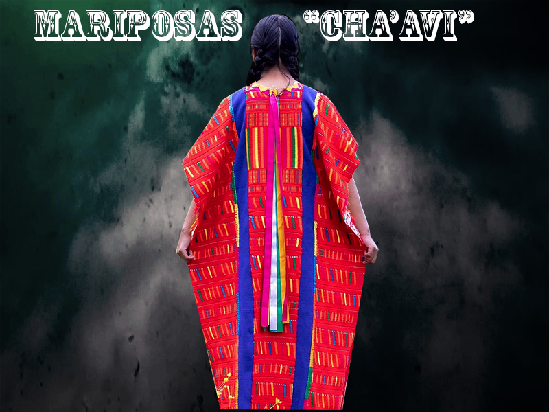

LIENZO TRIQUI: El lienzo triqui esta reprecentado principalmente por las figuras de mariposa, escaleras, y la cola de pescado que simbolizan la vida, abundancia, transformacion y belleza de la naturaleza. Estas figuras en conjunto reprecentan la identidad de las mujeres de San Martin Itunyoso.
AHORA: Con el acceso a la tecnologia se han echo adaptaciones al tejido, logrando hacer figuras como: religiosas, caricaturas, letras emojis.
ANTES: Los colores en el tejido son rojo, verde, amarillo y anaranjado, sin embargo, actualmente se utilizan colores en negro, blanco, rosa, azul, morado y variantes de los colores
originales.
